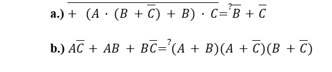

title
taskDescription
solutionDescriptionn

Feladat módosítása
Feladatnév:
Feladat leírása:
Feladat-kép:
Feladat megoldása:
Megoldás-kép:
Új feladat létrehozása
Adja meg a feladat nevét:
Ha szükséges, adja meg a feladat leírását:
Ha szükséges, töltse fel a feladathoz tartozó képet:
Ha szükséges adja meg a feladat szöveges megoldását:
Ha szükséges, töltse fel a feladathoz tartozó megoldás képet:
Új mappa létrehozása
Add meg az új mappa nevét: